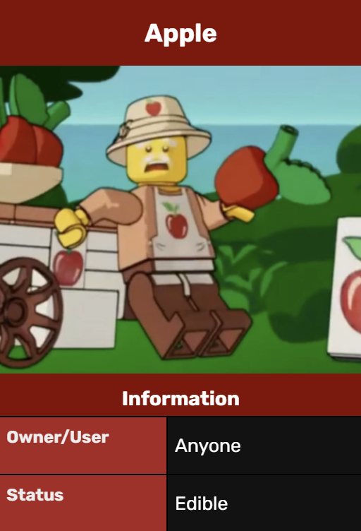

Apples are a round fruit from apple trees. They are commonly red, but other colored variants exist. They are edible and have a yellow interior flesh. The seeds are in the middle of the fruit. They are also very juicy, similar to other fruits. They also come with a brown stem on top. 